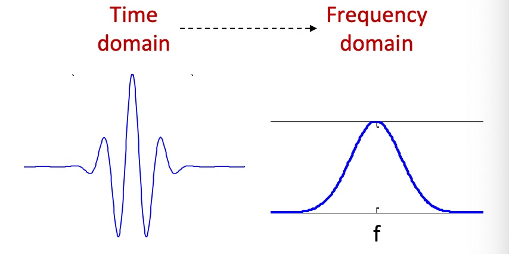
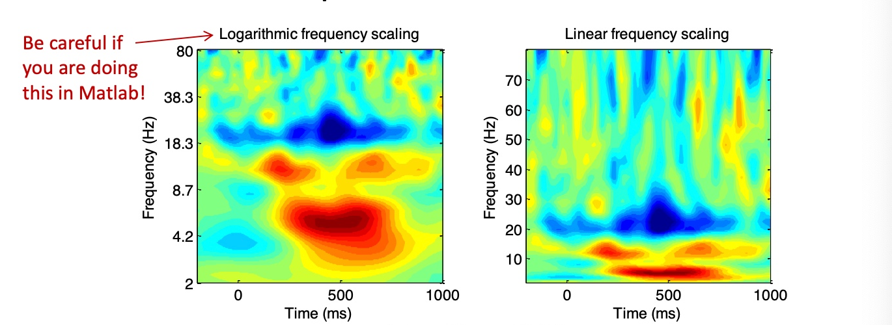

BME | EEG Analysis - Wavelet Transform
Basic Concept: Wavelet Transform
The wavelet transform uses a group of short kernels (wavelets) of different frequencies convolved with the original signal. Thus, the signal only needs to be stable over the length of the wavelet (stationary).
Similar to Fourier transform, when the signal frequency matches the wavelet frequency, the dot product yields larger amplitude results.
Wavelet convolution can be utilized as a band-pass filter.
Convolution Kernels
Types of Wavelets
There are various types of convolution kernels (wavelets) in wavelet transforms. Different types affect temporal precision. The most commonly used type is the Gaussian kernel (Morlet Wavelet).
Types of Wavelets: MathWorks - Introduction to the Wavelet Families
Wavelet Families
Definition: A set of wavelets of the same type but different frequencies is referred to as a family.
The Morlet wavelet appears as a Gaussian envelope in the time domain with a sinusoidal function inside. In the frequency domain, it resembles a Gaussian function with its peak at the wavelet’s frequency, f.

Real-valued Morlet Wavelet
Mathematical formula:
$$
a\sin 2\pi ft * a e^{-t^2/(2s^2)}
$$
Q: How is the Morlet wavelet constructed?
Construct a sine wave and multiply it by a Gaussian window to obtain the Morlet wavelet. It’s essential to consider the sampling frequency and the number of points in both the Gaussian window and the sine wave.
Q: What is the specific formula?
Sine wave formula: $a\sin 2\pi ft$
Gaussian formula: $a e^{-t^2/(2s^2)}$ where $s=\frac{n}{2\pi f}$
Wavelet formula: $a\sin 2\pi ft * a e^{-t^2/(2s^2)}$
n represents wavelet cycles, balancing temporal precision and frequency precision, and f denotes the wavelet frequency.
Q: How should one choose frequency and cycles?
Minimum frequency: The theoretical lower limit is 1 times the epoch-related frequency, but typically, 4 times the epoch-related frequency is chosen. For instance, for an epoch of 1 second, at least 4Hz is selected as the wavelet frequency.
Maximum frequency: The theoretical upper limit is the Nyquist frequency, but it’s common to ensure four sample points in each cycle. For example, with a 500Hz sampling frequency, a maximum of 125Hz is chosen as the wavelet frequency.
Number of wavelet families: Generally, 20-30 different frequencies are selected. For EEG cognitive tasks, 4-60Hz is usually chosen.

Q: Are there any issues with real-valued wavelets?
Similar to Fourier transform, pure real-valued convolution kernels require the original signal and the kernel to have the same phase. Hence, complex-valued wavelets are introduced.
Code
Exercise
Suppose I have a signal that is 60 seconds long with a sampling frequency of 100Hz, and I want to perform wavelet convolution. How should I write the code?
Maltab
1 | % wavelet parameters |

Python
1 | import numpy as np |

Complex-valued Morlet Wavelet
Mathematical formula:
$$
Ae^{-t^2/2s^2}e^{i2\pi ft} \quad \text{where} A=\frac{1}{(s\sqrt{\pi})^{1/2}}
$$
The left part is Gaussian, and the right part is a complex sinusoid.
Q: What is a complex wavelet?
The real and imaginary parts of the complex wavelet and their 3D representation are depicted below:

Q: How to interpret the results of convolution?
The result of complex wavelet convolution is a vector in the complex plane.
The magnitude of the complex vector represents how the signal’s power at the wavelet frequency changes over time (unaffected by phase).
The phase of the complex vector represents the phase relationship between the wavelet and the signal.
The real part of the complex vector is the result of the signal passing through a band-pass filter.

Q: How to choose parameters for the wavelet?
Number of cycles n: n determines the width of the wavelet. A larger n provides better frequency precision but poorer temporal precision.
Generally, for studying transient changes, 3-4 cycles are preferred, while for studying frequency changes, 7-10 cycles are chosen. Different cycle numbers can also be used at different frequencies.

Y-axis scaling:
Using an exponential logarithmic axis highlights the low-frequency range.
Using a linear axis highlights the high-frequency range.

Number of frequencies:
More frequencies yield higher resolution results. However, after a certain point, adding more frequencies may not provide significant benefits.

Length of wavelet: There is no maximum limit on the wavelet length. Its ends must approach zero, with its center at t=0. The sampling rate should match the signal’s.
Code
! practise
Suppose I have a 60s long signal with a sampling frequency of 100Hz and I want to perform complex-based wavelet convolution. How should the code be written?
Maltab
1 | % wavelet parameters |
Python
1 | import numpy as np |
Subsequent Analysis
Using real(wavelet_conv) = Result projected onto the real axis = Passed through a band-pass filter.
Using abs(wavelet_conv) = Magnitude of the vector = Power of the data at the wavelet frequency.
Using angle(wavelet_conv) = Angle of the vector = Phase angle of the data relative to the wavelet at a specific time point.
Efficiency tip: FFT → Multiplication → IFFT can replace convolution (conv) for improved computational efficiency.